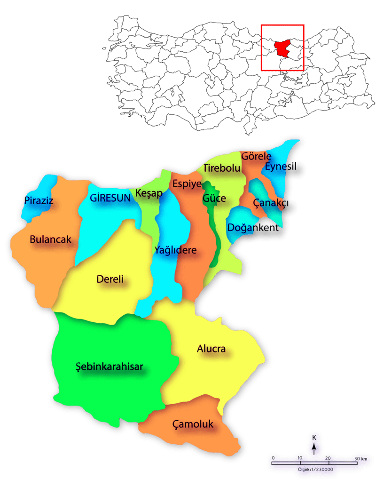
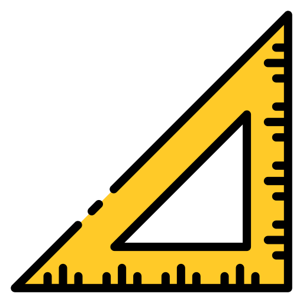

"Yeşil ile mavinin buluştuğu yer."
Giresun, Karadeniz Bölgesi'nin Doğu Karadeniz bölümünde, kuzeyinde Karadeniz sahili ile güneyinde Kuzey Anadolu dağlarının ikinci sırası arasında yer alan Giresun ilinin merkez ilçesi olup, batısında Bulancak, güney ve güneydoğusunda Dereli ve doğusunda Keşap ile çevrilidir. Karadeniz bölgesindeki yaşanabilir tek ada Giresun'dadır.
 448,400
6.934 km²
MUSTAFA MERT KISA
WEB TASARIMI DERSİ ARA SINAV ÖDEVİ